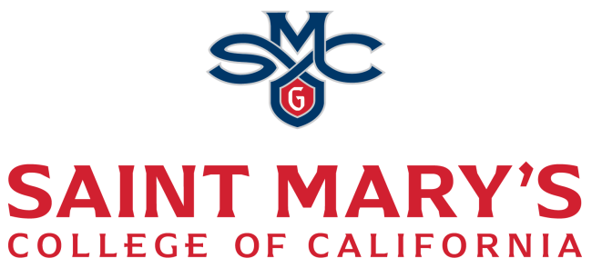

The Data Science Club offers students an environment to explore the breadth of data science and business analytics. Through interactive workshops and presentations by industry professionals, members develop practical skills, gain insights into emerging tools and techniques, and learn how data informs real-world decisions. The club emphasizes curiosity, skill-building, and professional growth in this dynamic field.